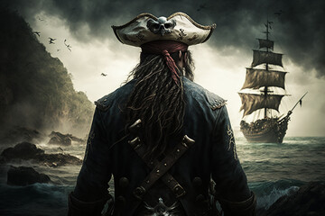

Pirates of the Caribbean: The Curse of the Black Pearl (2003)
Captain Jack Sparrow arrives in Port Royal to steal a ship but gets caught up in rescuing Elizabeth Swann, who is kidnapped by cursed pirates aboard the Black Pearl. These pirates, led by Captain Barbossa, are undead due to a stolen Aztec gold curse. Will Turner, a blacksmith in love with Elizabeth, joins Jack to rescue her.
Pirates of the Caribbean: Dead Man’s Chest (2006)

Jack Sparrow learns he owes a blood debt to Davy Jones, captain of the ghostly Flying Dutchman. If Jack doesn’t repay him, he will be dragged to serve on the ship forever. Jack, Will, and Elizabeth all hunt for the heart of Davy Jones, which gives control over him.
Pirates of the Caribbean: At World’s End (2007)

Will, Elizabeth, and Barbossa go to rescue Jack Sparrow from Davy Jones’ Locker. Meanwhile, Lord Beckett controls the seas using the heart of Davy Jones and plans to eliminate all pirates. Pirate Lords must unite for a final battle.
Pirates of the Caribbean: On Stranger Tides (2011)

Jack Sparrow searches for the Fountain of Youth, crossing paths with Angelica, an old flame, and her father Blackbeard, who wants immortality. The Spanish and British also race to find the Fountain.
Pirates of the Caribbean: Dead Men Tell No Tales (2017)

A ghostly Captain Salazar escapes from the Devil’s Triangle and hunts Jack Sparrow. Jack, with Henry Turner (Will’s son) and Carina Smyth, searches for Poseidon's Trident, which can break all sea curses.